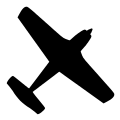

Somos una empresa fundada en el año 2007 en la localidad de serodino, provincia de santa fé.
En sus principios, la empresa contaba con un solo avion, un PA-25 Pawnee, pero a medida que se fueron expandiendo las areas de trabajo, la empresa adquiere otro avion, el cessna 188 AgHusky, que a su vez permitia hacer trabajos de siembra y fertilizacion.
Debido a la gran cantidad de trabajo, la empresa crea una base de operaciones en Charata, chaco, Y en 2017 adquiere su 3er avion, un AirTractor 402B, aeronave de primer calidad, que cumple los estandares de nuestros clientes.
Piloto comercial de avion
Piloto aeroaplicador
Flight Dispatcher
Instructor de vuelo
Piloto comercial de primera clase
Piloto aeroaplicador
Piloto comercial de avion
Piloto aeroaplicador
Tecnico aeronautico